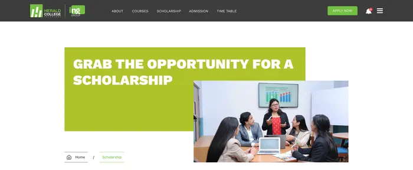
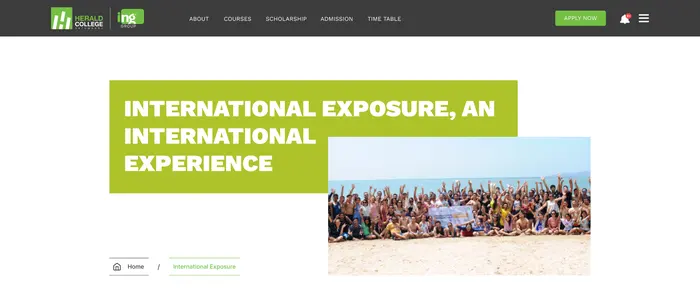
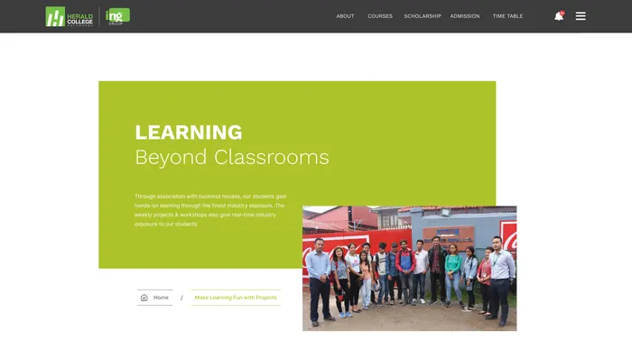
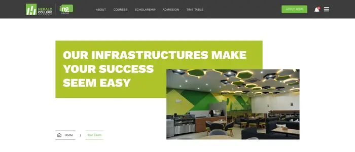

Inner pages
The home is colourful. The inside is lime.
Once you leave the home page, every header follows the same recipe: a lime block with a capitalised headline, a photo that overlaps its corner, and a breadcrumb underneath. Five pages, one shape.





The blockLime, with the headline in heavy capitals.
The overlapA photo pushed into the block's lower right corner, so the header has depth without a hero image.
The breadcrumbHome, then the page, underlined in lime.